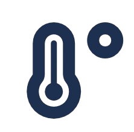

Founder
Founder, designer, and developer responsible for shaping the product from concept through execution.
Founder, designer, and developer responsible for shaping the product from concept through execution.
Scotch Plains, New Jersey
Teaching swim instruction and water-safety skills to community members.
Scotch Plains, New Jersey
Supporting facility safety with training in lifeguarding, first aid, and CPR/AED.
Assisted with lessons, technique development, and student water confidence.
Scotch Plains-Fanwood, New Jersey
I plan and lead free workshops where younger students explore coding, LEGO engineering, Snap Circuits, and science. I work with Event Manager Letizia Lavelli to organize sessions and make hands-on STEM learning more accessible.
Workshop overview
Designed for students in grades 2–6, this tool-free session introduced electricity and engineering. Students built working circuits and integrated components such as speakers and fans.
Workshop overview
Students in grades 3–6 designed, built, and tested LEGO bridges while exploring strength, balance, structural design, creativity, and teamwork.
Young engineers followed the process: Imagine → Plan → Create → Experiment → Improve.
Workshop overview
This session introduces coding fundamentals with Scratch, MIT's free block-based visual programming tool. Participants should bring a laptop when possible; the library has a limited number available to borrow.
Workshop overview
Students will explore urban planning, zoning, transportation, spatial thinking, architecture, balance, and stability while constructing bridges, towers, and neighborhoods.
One hour each week helping younger swimmers develop their technique, confidence, and enjoyment of the water.
Tutoring children seeking refuge in the United States and helping strengthen their English and math skills.
02 / Learning
September 2024–June 2028 · High School Junior
June 2026–July 2026
July 2025
03 / Credentials
Inspirit AI
Issued June 2025
Unity
Issued June 2025
Unity
Issued June 2025
American Red Cross
Issued March 2025 · Expires March 2027
Georgia Institute of Technology
Issued February 2025
American Red Cross
Issued November 2024 · Expires November 2026
04 / Selected work
Software and engineering,
from concept to execution.

Weather, made simple.
The Real Temp turns a complicated weather report into a clear picture of what it actually feels like outside—and what matters next. I founded, designed, and developed the product from its first idea through its live web experience.
Explore the live appHow it works
Built around the user
An autonomous robot concept designed to identify roadway cracks and apply sealant. The goal is to address cracks before water intrusion and winter freeze-thaw cycles can worsen them into potholes.
05 / Capabilities